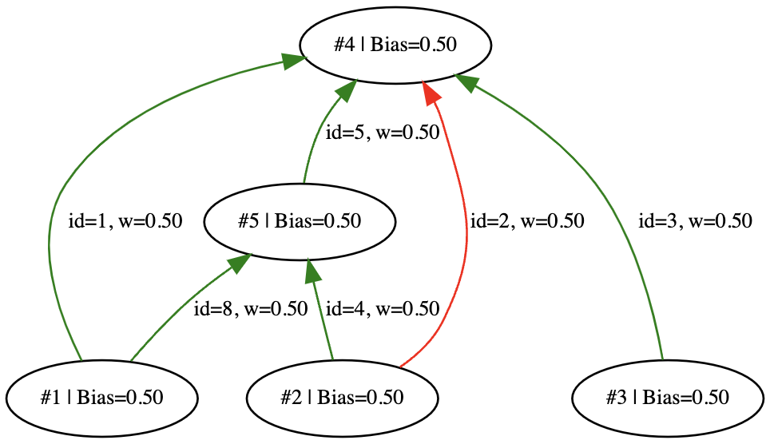
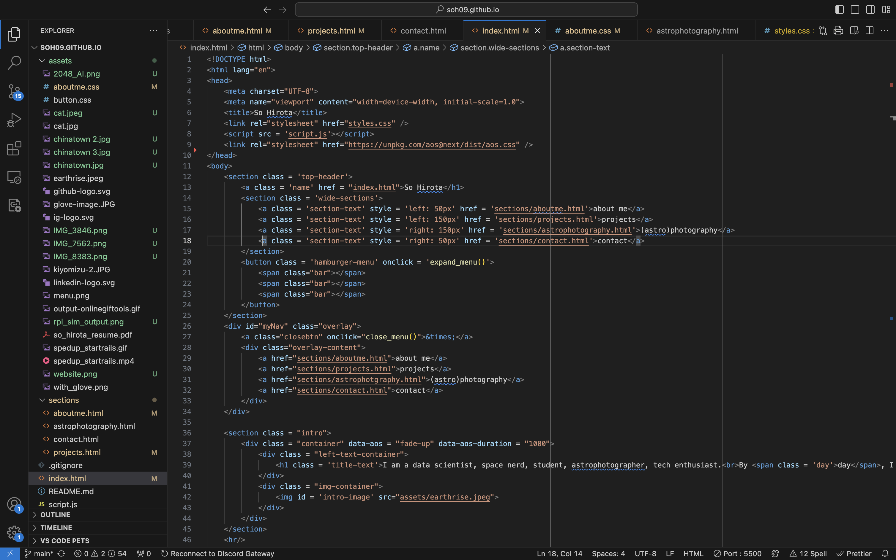
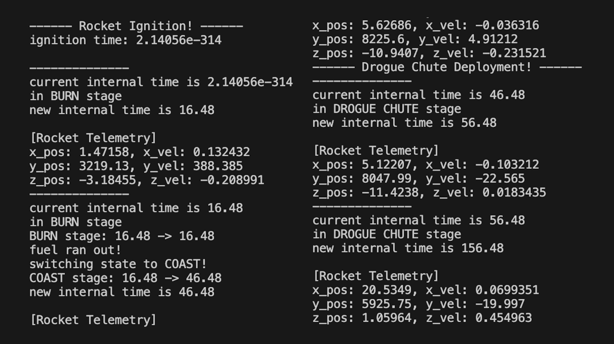
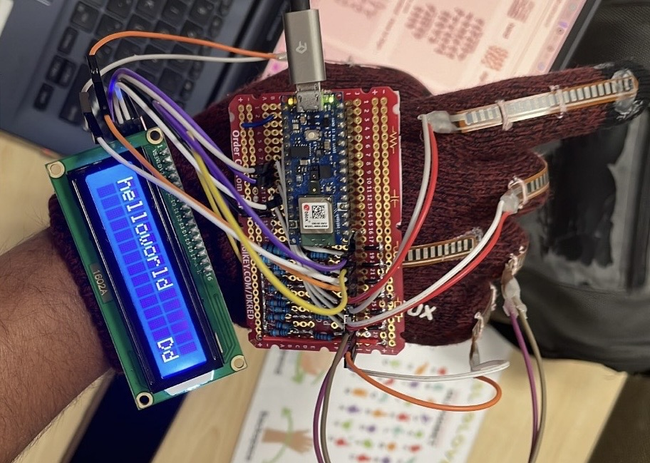
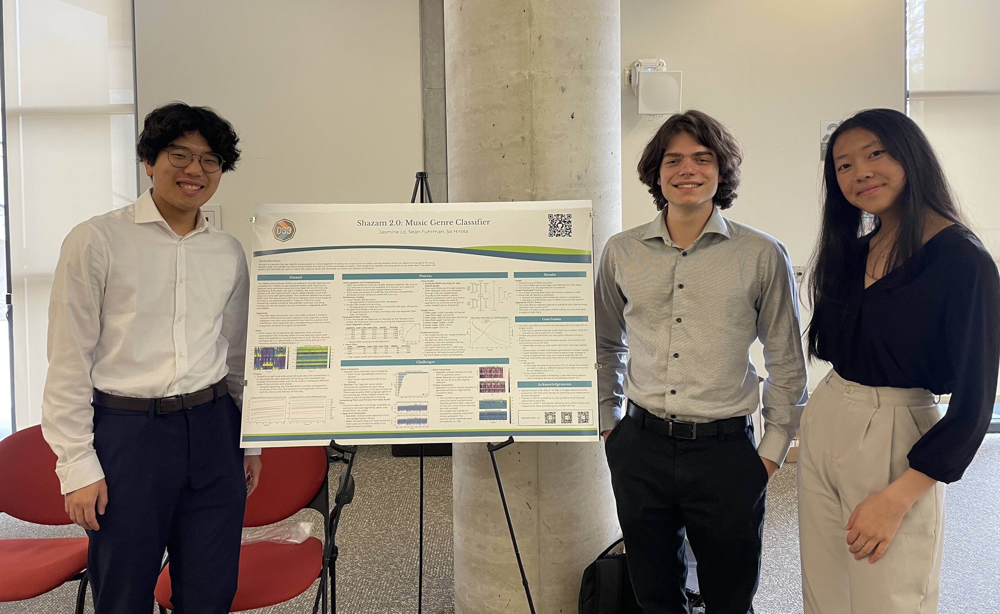

November 2023 - Current
Tech: Python, Neural Networks, Evolutionary Algorithm
I am writing a custom implementation of the NEAT (Neural Evolution of Augmenting Topologies) Algorithm, with the end goal of evolving a network capable of playing the 2048 game. I am currently implementing the logic for the NEAT Algorithm, alongside a fully custom implementation of neural networks.
July 2023 - March 2024
Tech: HTML, CSS, Javascript
I am developing my website as a place where people can learn about me, my projects, and my passion. The designing is all done by me; I hope you're enjoying your stay!


October 2023 - March 2024, Rocket Propulsion Lab
Tech: C++, Boost (ODEInt), Git, Catch2
I developed software to simulate the position of a liquid propellant rocket. It uses predefined systems of equations that describes the trajectory of the rocket in its various phases of deployment.
June 2023
Tech: D3.js, Javascript, Python, Pandas
I created a data visualization website for FIRST Robotics Competition team matchup data using D3.js. The library enabled my website to have rich interactivity, such as sorting, panning, zooming, and searching.

June 15th, 2024, HardHack Hackathon
Tech: Python, SKLearn, Arduino
Our team developed a glove that could detect American Sign Language alphabets. We utilize flex sensors on each of the fingers to measure the amount of bending, and trained a K-Nearest Neighbor Classifier to perform the prediction.
December 2022 - June 2023, DataSci Student Society
Tech: Python, PyTorch, AWS
We created a music genre classifier that could classify the genre using snippets of songs in a similar fashion to the popular Shazam service. We utilized the Million Song Dataset, and trained the classifier on timbre and pitch, which are derivative features of the raw audio of songs. Click here to see the poster.
